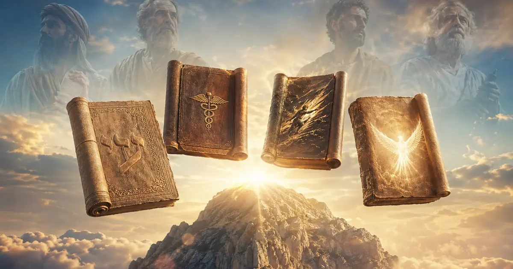
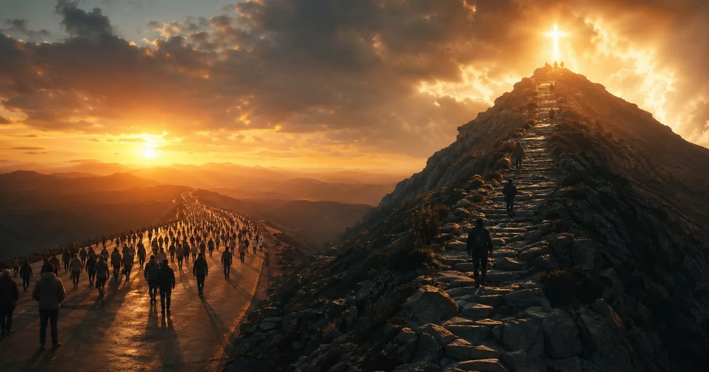

Часть I
Два текста, один Иисус
Архитектура Нагорной проповеди: inclusio, блаженства, антитезы, молитва Господня, «соль и свет», два строителя. Почему нельзя читать только параллельные места из Луки.
Авторская серия
Полная навигация по серии «Нагорная проповедь»: 5 частей, источники, находки.
Каждая часть — самостоятельное исследование, объединённое общей методологией.
Серия рассчитана на 89 минут чтения и подходит для последовательного изучения.
Богословская база — реформатская, методологическая — TMS / Chicago Statement.
Все материалы открыты, без подписки и регистрации.
Это не просто подборка материалов о Нагорной проповеди, а выстроенное исследование в пяти шагах: от содержания и синоптических различий — к вопросу об адресате, богодухновенности и, наконец, к Закону и Евангелию. Серию лучше читать последовательно, потому что каждый следующий текст опирается на уже сделанные экзегетические выводы.
5 частей серии

Архитектура Нагорной проповеди: inclusio, блаженства, антитезы, молитва Господня, «соль и свет», два строителя. Почему нельзя читать только параллельные места из Луки.

Синоптическая проблема, Q-гипотеза, Independence View (TMS), ipsissima verba и ipsissima vox, Chicago Statement и спектр консервативных позиций по вдохновению.

Четыре уровня аудитории, пять позиций в богословской традиции, Мф 5:20 как ключ ко всей проповеди, Мф 28:20 как аргумент, биографический перелом МакАртура.

Concursus по Уорфилду, Chicago Statement Art. XIII, Иисус Семинар и ответ на него, вариантные выборки в параллельных текстах и их совместимость с безошибочностью Писания.

Спасение с признанием Господства, три usus Закона, Мф 7:21–23 и ложные ученики, зеркало/карта/дар — итог всей серии. Нагорная проповедь как учение Царя о жизни Царства.
частей серии
источников
исследовательская находка
стихов Мф 5–7
«Нагорная проповедь» — авторская серия из пяти связанных исследований Матфея 5–7 и Луки 6:17–49. Каждая часть — самостоятельный текст, который опирается на предыдущий: от экзегезы к богословию. Сначала — содержание и синоптические различия, затем методология записи, вопрос об адресате, богодухновенность Евангелий и, наконец, Закон, Евангелие и практика.
Богословская позиция — реформатская. Методологическая основа — грамматико-исторический метод (The Master's Seminary / Chicago Statement on Biblical Inerrancy, 1978). Ключевые источники: MacArthur (GTY), R. L. Thomas и F. D. Farnell («The Jesus Crisis», Kregel 1998), Warfield, Абнер Чау и 120+ верифицированных ссылок из академической и церковной традиции.
Все пять частей открыты бесплатно. Суммарное время чтения — ~89 минут. Источники — 120+ верифицированных позиций. Исследовательские находки — 21 позиция.